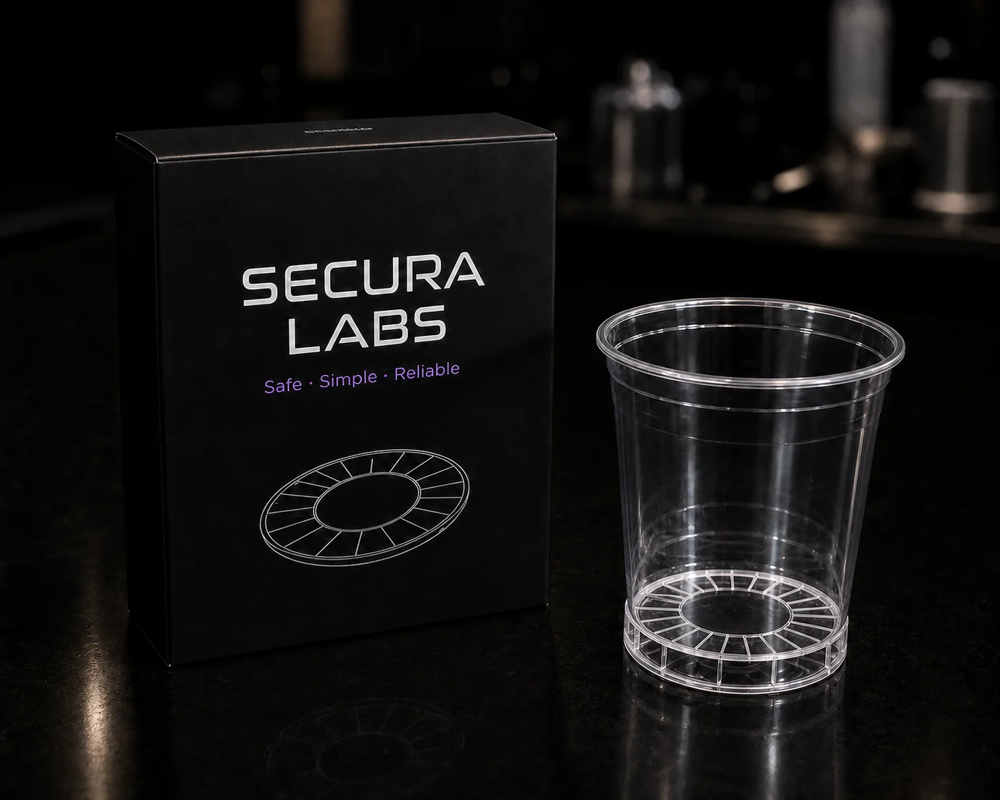
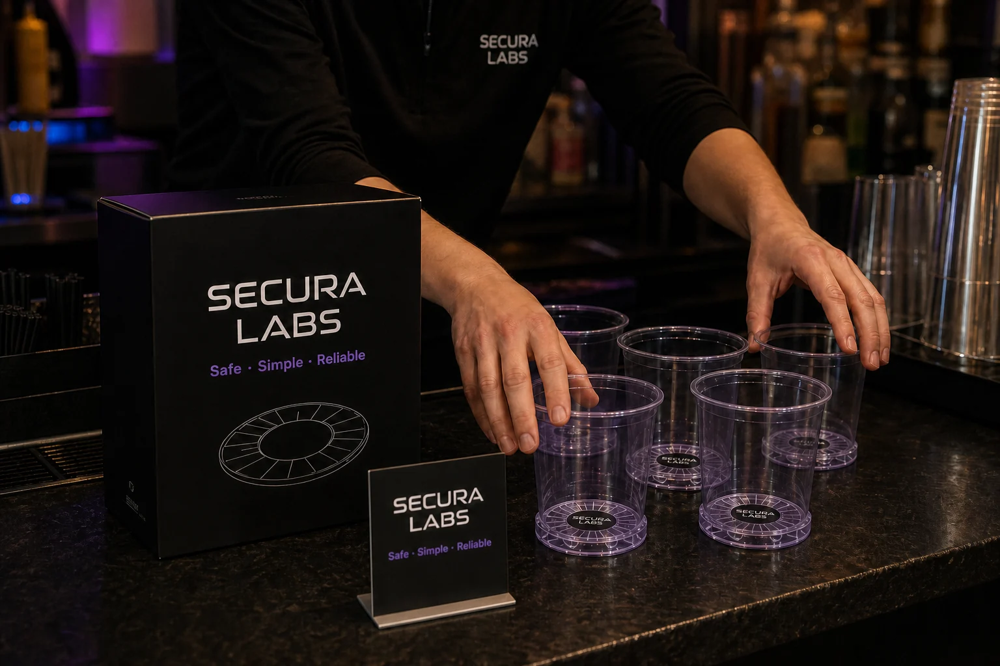

Invisible protection built into your everyday beverage. SecuraLabs shifts personal safety from reactive to proactive with the Ki-Liner.
Shop Ki-Liner
Disposable liner format for events, universities, airlines, and high-volume venues.
Designed to work passively once placed inside drinkware.
Standard and Thermal versions support different beverage environments.
Built for B2B rollout across bars, campuses, events, and hospitality partners.
How Ki-Liner Works
The business plan describes nanosensor-based monitoring paired with a phase-responsive material that can form a gel-like barrier when concerning chemical patterns cross a safety threshold.
A single-use Ki-Liner is placed inside compatible drinkware before service.
Embedded sensors monitor for chemical changes or patterns associated with tampering.
If a concerning threshold is crossed, the responsive material is intended to form a gel-like barrier.
Validation Focus
Testing focus: SecuraLabs focuses on reducing false positives in complex beverage compositions, improving reaction time, and supporting practical drinkware formats.
Detection scope: Ki-Liner is designed around chemical signatures associated with common drink-adulteration concerns, including GHB, ketamine analogs, and benzodiazepines.
Responsible use: Ki-Liner is an added safety layer for social environments. Public validation, certification, and detection coverage should be reviewed as part of any venue rollout.

In crowded, low-visibility settings, drink tampering is a persistent threat. The Ki-Liner is the world's first passive, material-based safety system that detects abnormal chemical signatures and physically interrupts consumption.
The invisible Ki-Liner lines your cup. During normal use, it remains completely inactive and undetected.
If abnormal chemical signatures are introduced, the embedded material immediately reacts.
A localized chemical reaction alters the liner's structure, creating a gel-lock that physically interrupts consumption.
Product Roadmap
Explore future directions including Ki-Liner 2000, Ki Smart Surfaces, integrated drinkware, and safety packaging.